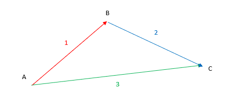
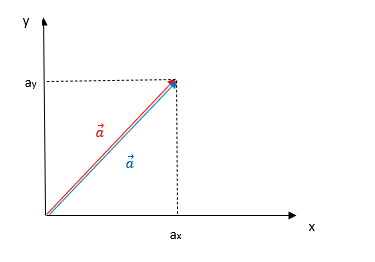
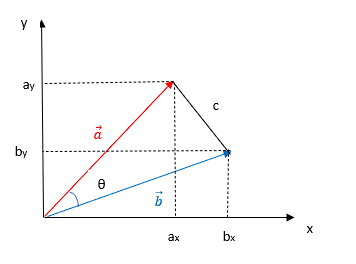

ベクトルについて
大きさと向きを持つ量
これは主に点の位置関係を表すために用いられる。ただ、一点のことを示すために使うことができないことに気を付ける。
例）図のように、ABCの三人がいた場合
-
Aさんから見てBさんはこの方向にこれだけの距離のところにいる。
-
Bさんから見てCさんはこの方向にこれだけの距離のところにいる。
-
Aさんから見てCさんはこの方向にこれだけの距離のところにいる。

互いの位置関係は実際、2つのベクトルから判明する。仮にAさんがCさんの位置を知らず、1のBに2を聞くと、直ちに3も判明してしまう（1と2を組み合わせたものが3になる）。
この式はベクトルの方向のみ関わるもので、長さは三角形を描くことから、余弦定理などより求める必要があることに注意！
また、Cの代わりにBにしても が成り立ち、前の式に代入すると以下のようになる。 ここで括弧の部分は結局B自身の場所を自分自身が見ているものとなっており、 符号が変わると、向きが反転することが分かる。
座標でベクトルを表記してみる。前回の例に出てきたA,B,Cが次のように配置されているとする。

ここまではベクトルの方向だけ扱ってきたが、ここでは大きさ（長さ）の方を見ていくことにする。図のように、ベクトル があるとき、（ベクトル の大きさ）としてピタゴラスの定理から となる。このときの各辺を見ると となる。

そうすると、右辺において一つが別のベクト になった場合は であると推測される。これを確かめるため、図を長さだけで書くと、次のようになる。

一方で、余弦定理を用いると であることから、次の関係式が成り立つ。 これを整理することで以下の式が導かれる。 これは内積と呼ばれるもので というように書くと、ベクトル同士の関係を角度により確認することができる。